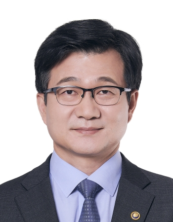

미래 방위산업을 이끌 융합 연구와 인재 양성의 거점이 되겠습니다.
전북대학교 K-방위산업연구소는 첨단 기술과 국방 수요를 연결하고, 지역 산업과 함께 성장하는 실천형 연구 플랫폼을 지향합니다.

안녕하십니까.
전북대학교 K-방위산업연구소 홈페이지를 방문해 주셔서 감사합니다. 우리 연구소는 급변하는 안보 환경과 K-방산의 글로벌 도약에 대응하기 위해 국방 정책, 첨단 과학기술, 산업 협력 역량을 결집하는 교육 및 연구 거점입니다.
연구소는 방위산업 정책, 무기체계 개발, 방산 경영과 수출 전략에 이르는 폭넓은 분야를 아우르며, 현장 중심의 문제 해결 능력을 갖춘 전문 인재 양성을 핵심 목표로 삼고 있습니다.
또한 대학의 연구 역량과 산업체의 실무 경험을 긴밀히 연결하여 지역 방산 생태계의 경쟁력을 높이고, 대한민국 방위산업의 지속 가능한 성장을 뒷받침하겠습니다.
앞으로도 전북대학교 K-방위산업연구소가 국방과 산업, 대학과 지역을 잇는 든든한 협력 플랫폼으로 성장할 수 있도록 많은 관심과 성원을 부탁드립니다.
전북대학교 K-방위산업연구소장 강은호